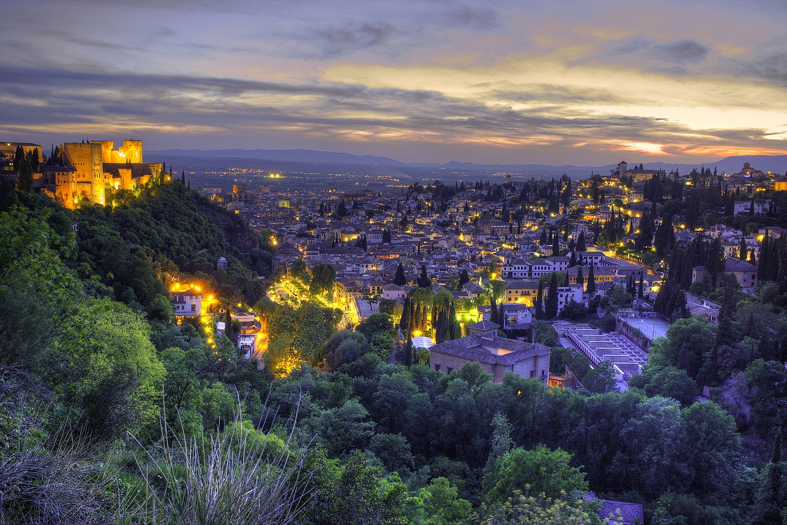
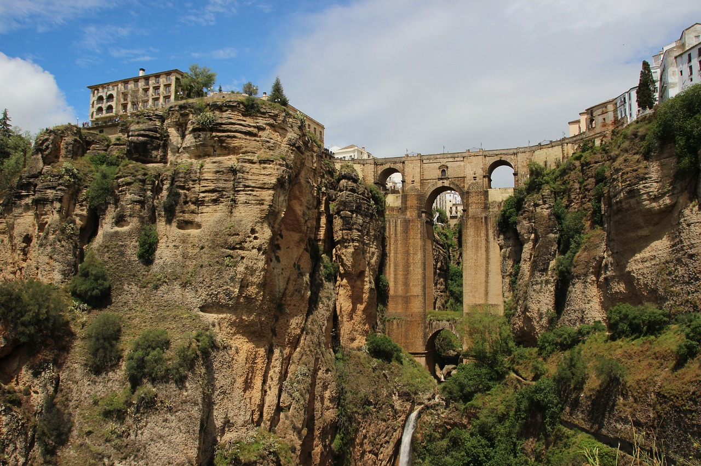

Esta página es una tarea de clase
Andalucía es una comunidad autónoma española reconocida como nacionalidad histórica por su Estatuto de Autonomía, compuesta por ocho provincias:
El escudo de Andalucía muestra la figura de un Hércules joven entre las dos columnas de Hércules que la tradición sitúa en el estrecho de Gibraltar, con una inscripción a los pies de una leyenda que dice: «Andalucía por sí, para España y la Humanidad», sobre el fondo de una bandera andaluza. Cierra las dos columnas un arco de medio punto con las palabras latinas Dominator Hercules Fundator, también sobre el fondo de la bandera andaluza.
La bandera oficial de Andalucía está compuesta por tres bandas horizontales verde, blanca y verde, de igual tamaño; sobre la banda central blanca se sitúa su escudo.
Fue creada por Blas Infante y aprobada en la Asamblea de Ronda de 1918. Infante eligió el verde como símbolo de la esperanza y la unión y el blanco como símbolo de paz y diálogo. La elección de estos colores se debe a que Blas Infante consideraba que habían sido los más usados a lo largo de la historia del territorio andaluz. Según él, el estandarte de la dinastía andalusí de los Omeyas era verde y representaba la convocatoria del pueblo. El blanco, en cambio, simbolizaba el perdón entre los almohades, que en la heráldica europea es interpretado como parlamento o paz. Otras noticias históricas justifican la elección de los colores de la bandera. Los nacionalistas andaluces la denominan la Arbonaida, que significa «blanquiverde» en lengua mozárabe.
El himno de Andalucía es una composición musical de José del Castillo Díaz, director de la Banda Municipal de Sevilla y conocido comúnmente como Maestro Castillo con letra de Blas Infante. La música está inspirada en el Santo Dios, un canto religioso popular que los campesinos y jornaleros de algunas comarcas andaluzas cantaban durante la siega en las provincias de Málaga, Sevilla y Huelva. Blas Infante puso este canto en conocimiento del Maestro Castillo, quien adaptó y armonizó la melodía. La letra del himno apela a los andaluces para que se movilicen y pidan «tierra y libertad», mediante un proceso de reforma agraria y un estatuto de autonomía política para Andalucía, en el marco de España.